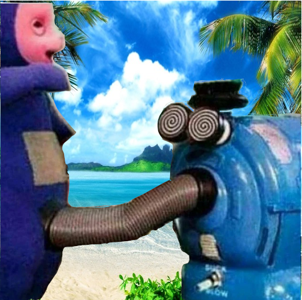

Computer Aided Design
How-to resize:
- 1.Install & open Gimp
- 2.Open Image->Hover over Image tab->Click Scale Image
- 3.Choose the measurement for your Image->Click Scale once done
How-to remove & replace Background:
- 1.Continuing from above, Click on Foreground Select Tool->Trace the object/person->Hit enter
- 2.Highlight the object/person, making sure it's no longer covered in any colours->click enter

- 3.Go to the paths tab->Click Selection to path

- 4.Right click the original layer->Add Layer Mask->Choose selection->Click add

- 5.Open the backrgound you would like->Resize->Copy & Paste into the layers tab
- 6.Convert the floating layer to an actual layer
- 7.Enjoy :)
